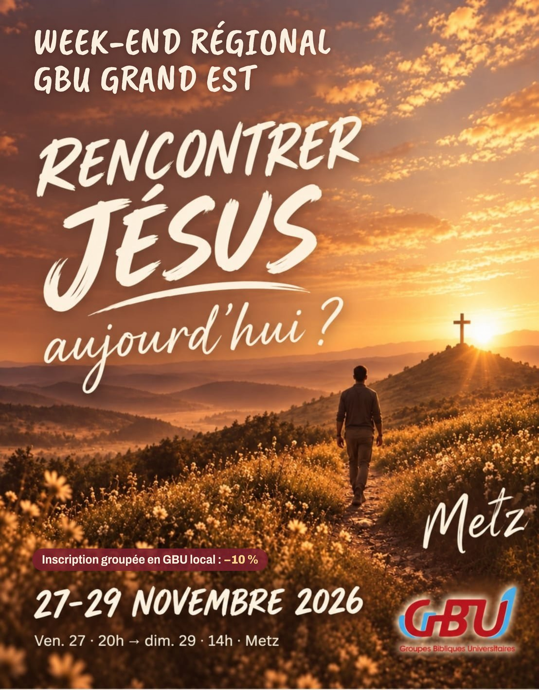

Rencontré.Appelé.Envoyé.
Week-end GBU Grand Est
28–29 novembre 2026 · Metz

Au programme
Messages
pour grandir dans la foi
Louange
pour vivre la communion avec Dieu
Sport & jeux
pour s'amuser ensemble
Infos pratiques
- QuandSamedi 28, 9h → dimanche 29 nov., 14h
- OùMetz
- Pour quiÉtudiants des GBU et leurs amis, chrétiens ou pas
- Prixà confirmer · −10 % en inscription groupée avec ton GBU local
- LogementInclus, avec les repas
Arrivée possible dès le vendredi 27 au soir.